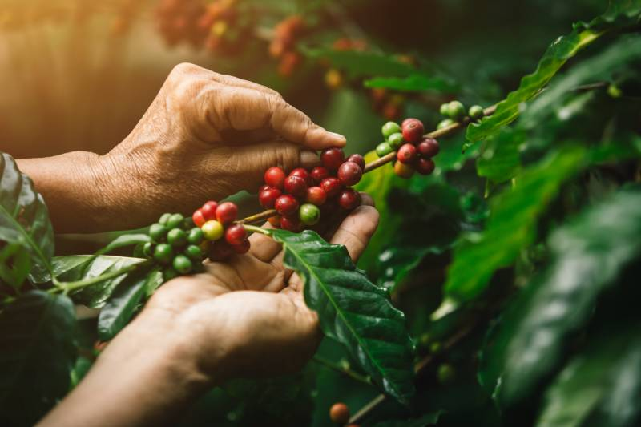

Introducción

Cada origen tiene un clima diferente.
Cada suelo aporta características únicas.
Cada productor imprime su propia esencia.
Nuestro trabajo consiste en preservar toda esa identidad hasta llegar a tu taza.